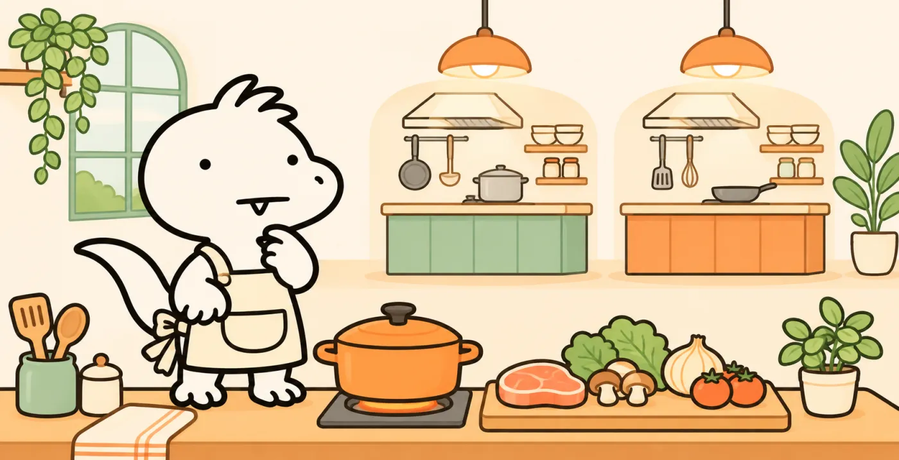
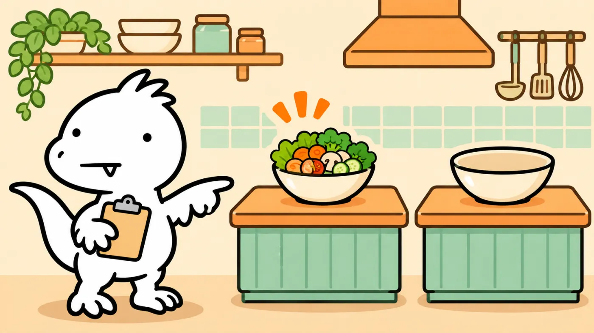

vLLM은 GPU 한 대(또는 한 묶음)를 꽉 채워 굴리는 추론 엔진이고, llm-d는 그 엔진 여러 대를 쿠버네티스 위에서 묶어 요청을 똑똑하게 나눠 주는 배차 본부입니다. 작은 서비스라면 vLLM부터 시작하고, 서버가 여러 대이고 반복되는 긴 요청이 많다면 llm-d를 검토해 볼 만합니다.

LLM이 답을 만드는 과정은 크게 두 단계입니다. 먼저 손님의 주문서(프롬프트)를 한 번에 쭉 읽고 재료를 손질하는 프리필(prefill), 그다음 답을 토큰 하나씩 이어 붙이는 디코드(decode)입니다. 프리필은 계산이 몰리는 일이고, 디코드는 한 번에 조금씩이지만 오래 걸리는 일이라 성격이 꽤 다릅니다.
예를 들어 사내 챗봇에 “이 휴가 규정에서 연차 신청 방법을 알려줘”라고 물어본다고 해 볼게요. 챗봇은 먼저 규정과 질문을 읽고(프리필), 이어서 답을 조금씩 만들어 보여줍니다(디코드). 화면에 글자가 차례로 나타나는 모습을 떠올리면 됩니다. 토큰은 모델이 글을 처리하는 작은 조각으로, 꼭 한 글자나 한 단어와 같지는 않습니다.
손질해 둔 재료가 바로 KV 캐시입니다. 앞에서 읽은 문장의 계산 결과를 GPU 메모리(작업대)에 올려 두고, 다음 토큰을 만들 때마다 다시 꺼내 씁니다. 그래서 대화가 길어질수록 작업대 위 재료가 늘어나고, 작업대 자리가 모자라면 손님을 덜 받게 됩니다.
vLLM은 오픈소스 LLM 추론 엔진입니다. 모델 파일을 올리면 OpenAI 호환 API로 답을 내주는 서버가 되고, 핵심은 같은 GPU로 더 많은 손님을 받는 기술입니다. 업계어 세 개만 사람말로 바꿔 보겠습니다.
일부 기존 방식은 답이 얼마나 길어질지 몰라 손님마다 넉넉한 공간을 미리 잡아 둡니다. 짧게 끝나는 손님이 많으면 남는 공간이 생기죠. vLLM은 작업대를 작은 칸(블록)으로 나누고 재료가 늘 때마다 칸을 하나씩 빌려 줍니다. 운영체제가 메모리를 페이지 단위로 나눠 쓰는 방식을 빌려 와서 이름이 PagedAttention입니다.
단순한 배칭은 "이번 묶음 손님이 전부 다 먹을 때까지" 새 손님을 안 받습니다. 한 명이 코스 요리를 시키면 나머지 자리는 비어 있는 셈입니다. vLLM은 토큰 한 걸음마다 끝난 손님을 빼고 대기 손님을 끼워 넣습니다. 주방이 쉬는 틈이 줄어드니 처리량이 오릅니다.
프리픽스 캐싱이 활성화되어 있고 캐시가 남아 있다면, 여러 요청이 같은 시스템 프롬프트나 같은 문서로 시작할 때 공통 앞부분의 계산 결과를 재사용할 수 있습니다. 사내 챗봇처럼 앞머리가 똑같은 요청이 많을수록 효과가 큽니다. 이 "같은 밑국물" 개념이 3장부터 아주 중요해집니다.
손님이 늘면 vLLM 서버(주방)를 여러 대 띄우고 앞에 로드밸런서를 둡니다. 쿠버네티스라면 Service를 통해 여러 서버에 요청을 분산할 수 있죠. 실제 분산 방식은 환경과 연결 방식에 따라 다릅니다. 여기서 문제가 생깁니다. 로드밸런서는 어느 주방에 어떤 재료가 손질돼 있는지 모릅니다.
예를 들어 직원들이 같은 휴가 규정으로 “연차는 어떻게 신청해요?”와 “반차는 몇 시간인가요?”를 묻습니다. 두 질문이 규정 전문을 같은 앞부분으로 포함한다면, 그 부분의 계산을 재사용할 기회가 생깁니다. 하지만 첫 질문을 받은 A 주방 대신 B 주방으로 다음 질문이 가고 B에 해당 캐시가 없다면, B는 그 부분을 다시 계산해야 합니다.
같은 손님의 두 번째 질문이 다른 지점으로 가고 해당 캐시도 없다면, 그 지점은 공통 앞부분을 다시 손질해야 합니다. 같은 문서로 시작하는 요청 열 개가 열 군데로 흩어지면 같은 밑국물을 열 번 끓입니다. AI 에이전트처럼 대화가 길고 여러 번 왔다 갔다 하는 사용 패턴일수록 이 낭비가 커집니다.
llm-d는 2025년 5월 Red Hat·Google·IBM 엔지니어들이 공개한 쿠버네티스 기반 분산 LLM 추론 프레임워크입니다. 2026년 10월 20일 v1.0을 냈고, CNCF 샌드박스 프로젝트이며 v1.0 글 기준 25개 넘는 조직의 500명 넘는 기여자가 참여했다고 밝힙니다. 직접 모델을 계산하지 않고, vLLM(최근엔 SGLang도) 같은 엔진을 주방으로 두고 그 위에서 배차를 맡습니다.
입구는 쿠버네티스 공식 프로젝트인 Gateway API Inference Extension(추론 게이트웨이)입니다. llm-d의 스케줄러는 여기에 꽂히는 "엔드포인트 피커"로 동작해서, 요청마다 어느 vLLM 파드로 보낼지 고릅니다.

본부는 각 주방에 어떤 앞부분(프리픽스)이 손질돼 있는지 점수로 보고, 그 지점으로 요청을 보냅니다. 단, 그 지점 줄이 너무 길면 다른 곳으로 돌립니다. v1.0 문서 표현으로는 "포화될 때까지는 붙어 있기"에 가깝습니다. 여러 턴짜리 대화나 에이전트 세션을 같은 주방에 붙여 두는 세션 인식 라우팅도 v1.0에 들어갔습니다.
1장에서 본 것처럼 프리필은 연산이, 디코드는 메모리 읽기가 바쁩니다. 한 주방에서 둘을 같이 하면 긴 주문서 손질이 들어올 때마다 담고 있던 손님들이 잠깐씩 멈춥니다. llm-d는 손질 전담과 담기 전담 vLLM을 따로 두고, 손질된 재료(KV 캐시)를 NIXL이라는 전송 방식으로 넘깁니다. v1.0의 DisaggregatedSet은 이 두 주방을 한 묶음으로 관리해 업그레이드도 같이 맞춰서 합니다.
아래는 개념을 보기 위한 가상 데모입니다. 실제 llm-d 알고리즘이나 성능 수치를 재현하지 않습니다. 손님 여섯 명이 차례로 오는데, 그중 몇 명은 같은 문서(밑국물 🍲)나 같은 대화(🧾 2턴째)로 시작합니다.
초록 = 이미 손질된 재료를 재사용(캐시 적중), 빨강 = 처음부터 다시 손질. 줄이 3명을 넘으면 재료가 있어도 다른 주방으로 보내도록 했습니다.
아래 표는 공식 문서의 기능 설명을 바탕으로 한 제 판단입니다. 두 프로젝트 모두 "이럴 땐 필요 없다"는 기준을 공식적으로 내놓지 않았기 때문에, 조건이 애매하면 작은 구성으로 먼저 재 보시길 권합니다.
| 내 상황 | 추천 | 이유 |
|---|---|---|
| 노트북·워크스테이션에서 모델 써 보기, GPU 1~2장 | vLLM만 | 배차할 주방이 하나뿐입니다. 쿠버네티스 운영 부담만 늘어납니다. |
| 사내 챗봇, vLLM 몇 대, 요청이 짧고 서로 안 겹침 | vLLM + 일반 LB | 재사용할 밑국물이 적으면 캐시 인식 라우팅의 이득도 작습니다. |
| 같은 시스템 프롬프트·문서로 시작하는 요청이 많고 서버 여러 대 | llm-d 검토 | 캐시 재사용 기회가 있어 효과를 측정해 볼 만합니다. |
| AI 에이전트·코딩 도구처럼 대화가 길고 여러 턴 | llm-d 우선 검토 | 세션을 같은 주방에 붙이는 라우팅과 오프로딩이 직접 해당됩니다. |
| 긴 입력과 긴 출력이 섞이고, 응답 지연 목표(SLO)가 빡빡함 | 프리필/디코드 분리 실험 | 워크로드에 따라 효과가 달라지고 구성 난도가 높습니다. Red Hat 제품 문서 3.4는 이 기능을 개발자 프리뷰로 표시합니다. |
llm-d v1.0 발표 글에는 인상적인 숫자가 많지만, 대부분 도입 기업이나 협력사가 자기 환경에서 잰 값이고 비교 기준이 글에 자세히 적혀 있지 않습니다. 내 서비스에서 같은 배수가 나온다는 뜻으로 읽으면 안 됩니다.
| 누가 말했나 | 숫자 | 비교 기준 |
|---|---|---|
| Google Cloud (Vertex AI 운영) | TTFT 35% 넘게 감소, 프리픽스 캐시 적중률 35%→70% | 글에 명시 없음 |
| AWS (SageMaker HyperPod) | 초당 토큰 최대 70% 증가 | "표준 vLLM" 대비 |
| Google TPU 에이전트 코딩 워크로드 | 중앙값 TTFT 85% 넘게 감소, 처리량 2.4배 | 일반 쿠버네티스 Service 대비 |
| IBM Research | H100 544장으로 코딩 에이전트 최대 3,000개 동시, 캐시 적중 약 98% | 비용 비교 대상은 "독점 스택"으로만 표기 |
공통점은 하나입니다. 숫자가 큰 사례는 모두 앞부분이 많이 겹치는 워크로드(에이전트, 긴 대화, 같은 문서)였습니다. 그래서 6장의 첫 체크 항목이 "겹침부터 세기"입니다.